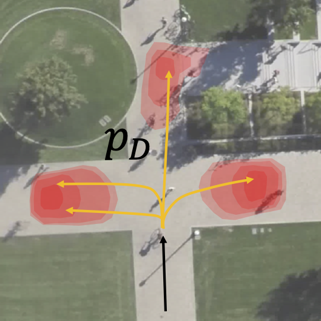
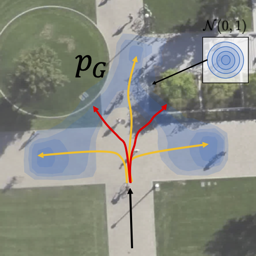
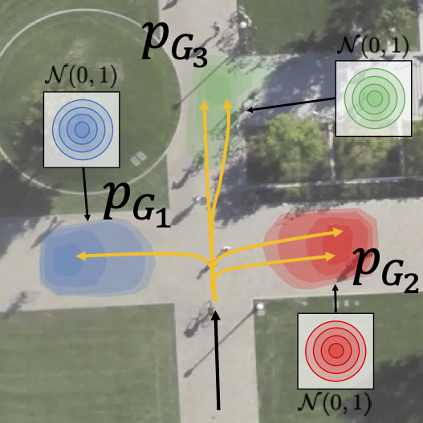
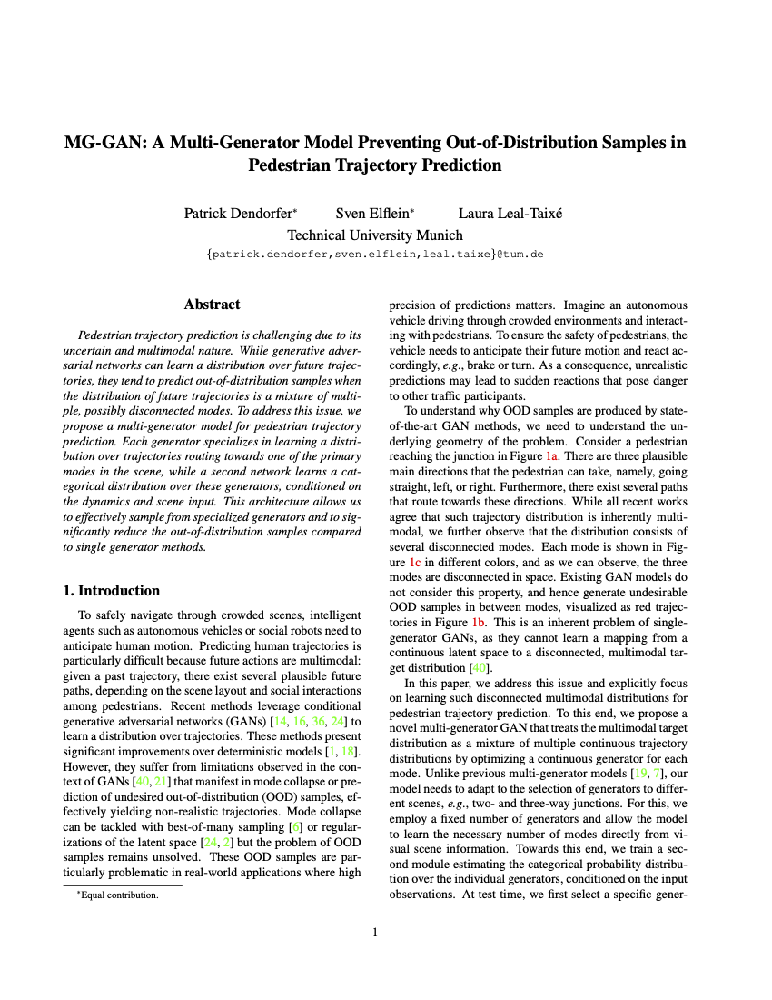
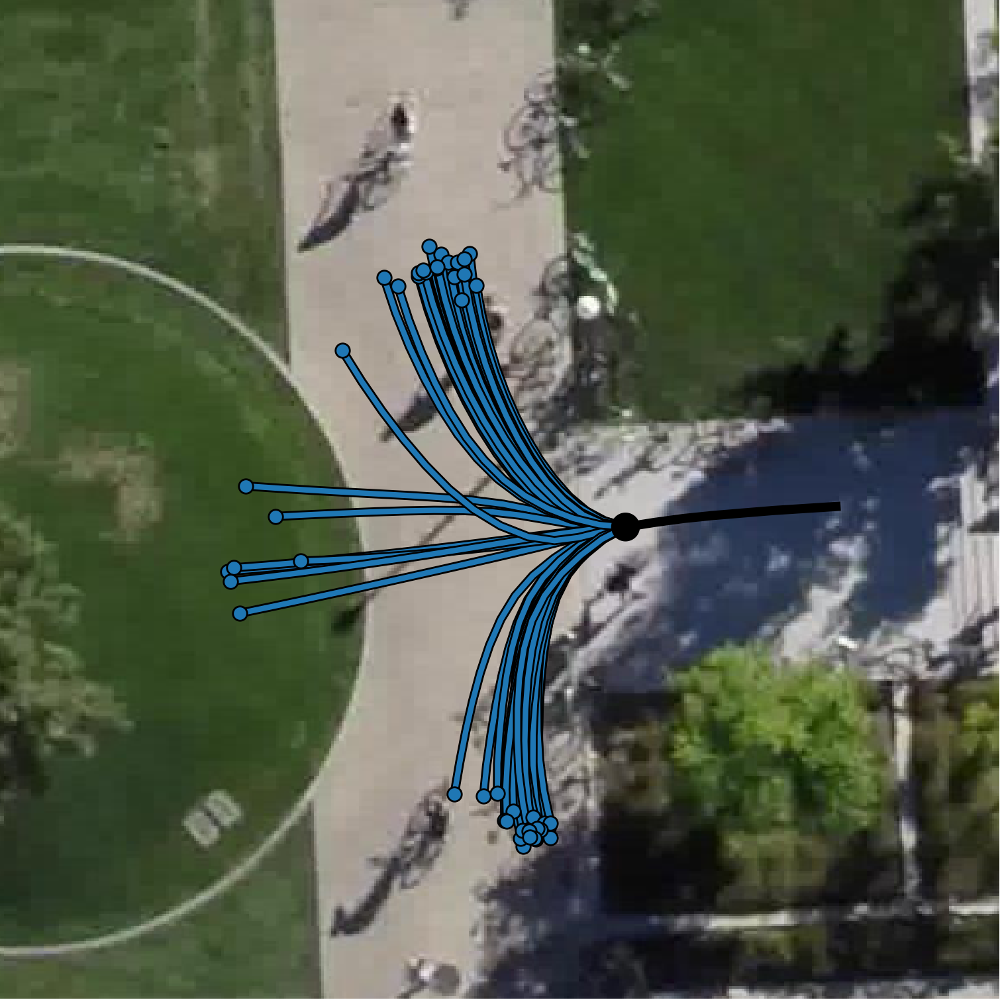
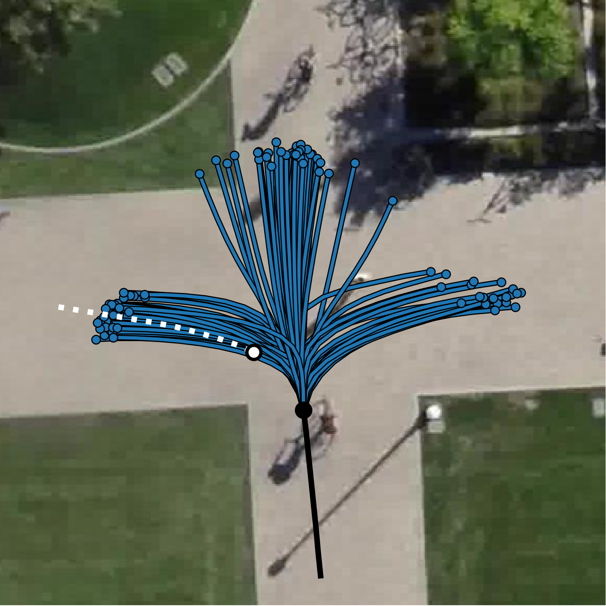
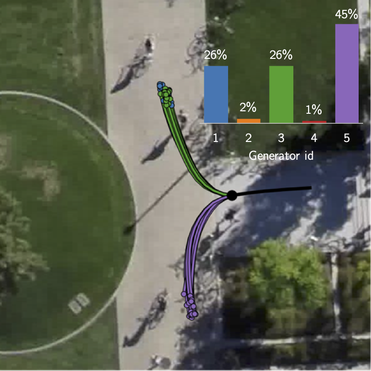
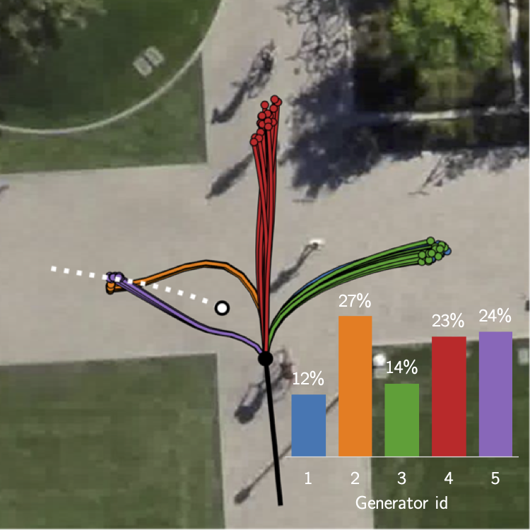

| Technical University Munich |
|
ICCV 2021 |
|
| [Paper] | [Bibtex] | [Video] | [Poster] | [Github] |
Overview Video
Abstract
Pedestrian trajectory prediction is challenging due to its uncertain and multimodal nature. While generative adversarial networks can learn a distribution over future trajectories, they tend to predict out-of-distribution samples when the distribution of future trajectories is a mixture of multiple, possibly disconnected modes.
To address this issue, we propose a multi-generator model for pedestrian trajectory prediction. Each generator specializes in learning a distribution over trajectories routing towards one of the primary modes in the scene, while a second network learns a categorical distribution over these generators, conditioned on the dynamics and scene input. This architecture allows us to effectively sample from specialized generators and to significantly reduce the out-of-distribution samples compared to single generator methods.
Motivation
|  |  |  |
|
|
|
|
Consider a pedestrian reaching a crossroad. The pedestrian can choose three different directions: right,
left, and straight.
In those cases, the distribution (a) of realistic trajectories is spatially multimodal and the support of
the distribution is disconnected.
To model human motion, we have to use stochastic methods to estimate the future trajectory.
Current state-of-the-art methods try to learn a multi-modal distribution with a single generator GANs. However, we find that they assign a probability to regions that have no support in the ground-truth distribution and therefore predict so-called out-of-distribution samples.
The problem emerges because Neural networks are continuous functions that preserve the topology of the latent space. Therefore, a single generator model is theoretically incapable of learning a multimodal distribution on disconnected supports.
In this paper, we overcome the limitations of single generator GANs and introduce a multi-generator model to solve the problem of generating out-of-distribution samples. The mixture model is discontinuous where each can specialize on one particular mode of the distribution.
|  |
MG-GAN: A Multi-Generator Model Preventing Out-of-Distribution Samples in Pedestrian Trajectory Prediction ICCV 2021 (Poster) [Paper] [Bibtex] [Github] |
Model Overview
The key idea of our paper is to decompose the task of trajectory prediction into two stages.
(1) We encode the scene and assess the scenario.
Based on the observations, we predict the inherent modes in the scene and activate the required generators.
(2) Once selected, we pass the encoding to the selected generators and generate the prediction.
Our proposed MG-GAN consists of several key components:
-
Encoder:
The encoder extracts the visual scene information and dynamic features of the pedestrians using recurrent neural networks. -
Attention Modules:
The encoded features are used to compute physical and social soft attention. -
Path Mode Network (PM):
The Path Mode network consumes the features and attention vectors and estimates a probability distribution over the different generators. -
Multiple Generators:
Each generator has its own set of parameters and consists out of a recurrent decoder. Our training procedure encourages each generator to focus on one particular mode of the output distribution.
The mixture model is discontinuous where each can specialize on one particular mode of the distribution.
In contrast to existing multi-generator methods, we propose the Path mode Network, which selects the
best-suited generators for a new scene conditioned on the input observation.
For more information about the training procedure, results and implementation we encourage you to read
our paper.
Visualizations
|  |  |  |  |
| (a) Single Generator GAN | (b) MG-GAN (ours) | ||
The figure shows two scenarios containing a junction with 3 modes and an interacting pedestrian (white).
Visually, we observe how the GAN L2 baseline (a) produces many out-of-distribution samples while our method
learns the gt distribution (b).
Here, we can see the probabilities for the different generators estimated by the PM Network that allow us to
select and de-activate particular generators for the scene.
Each generator is specialized to cover one particular mode in the scene. Trajectories of the same
generator are displayed in the same color.
Code
The source code of our model and pre-trained models reported in the paper are publically available.
[GitHub]
Acknowledgements
This project was funded by the Humboldt Foundation through the Sofja Kovalevskaja Award. We highly thank Aljoša Ošep for helpful discussions, constructive feedback, and proofreading. This webpage was inspired by Colorful Image Colorization.